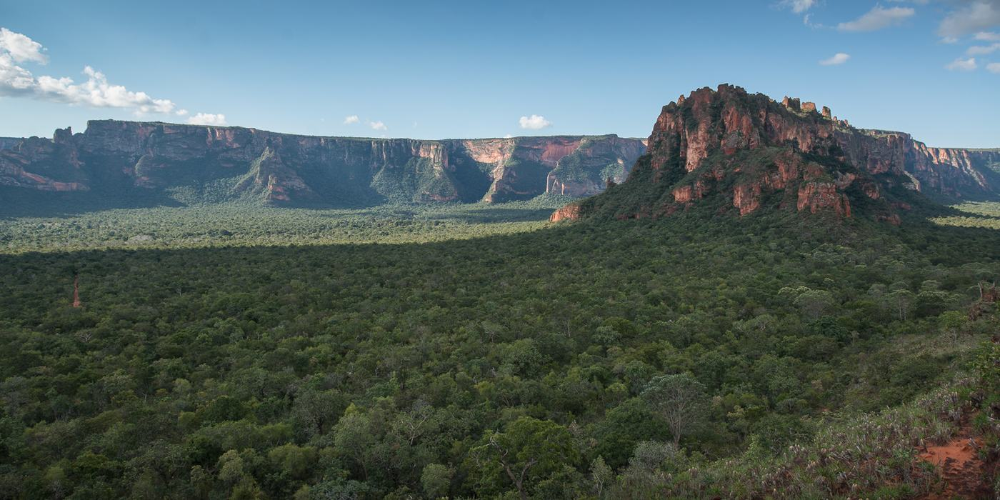
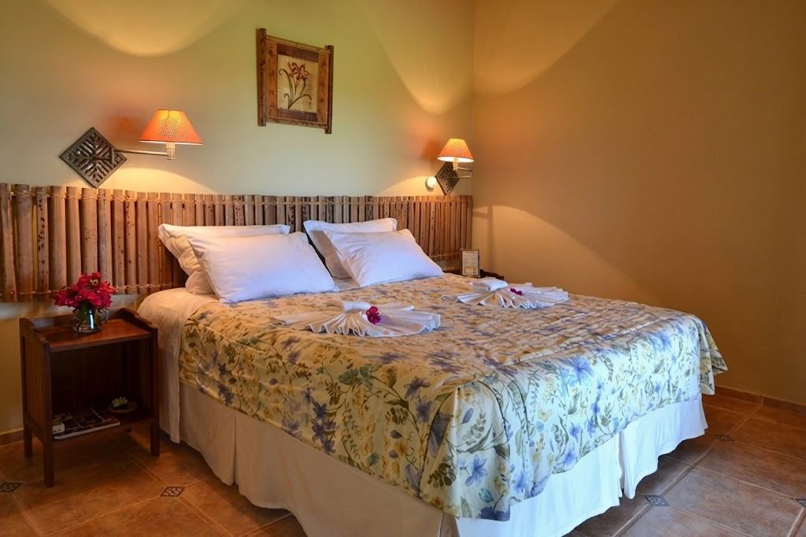
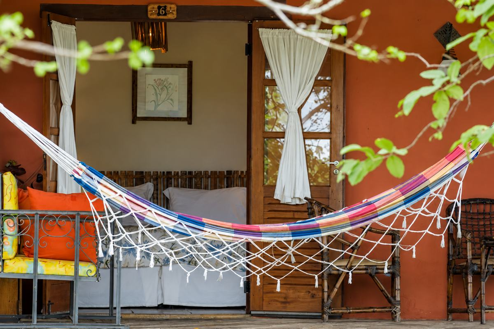
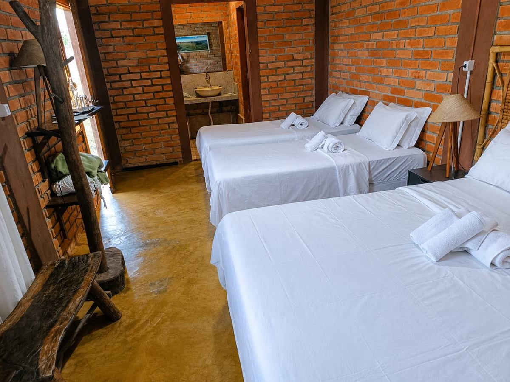
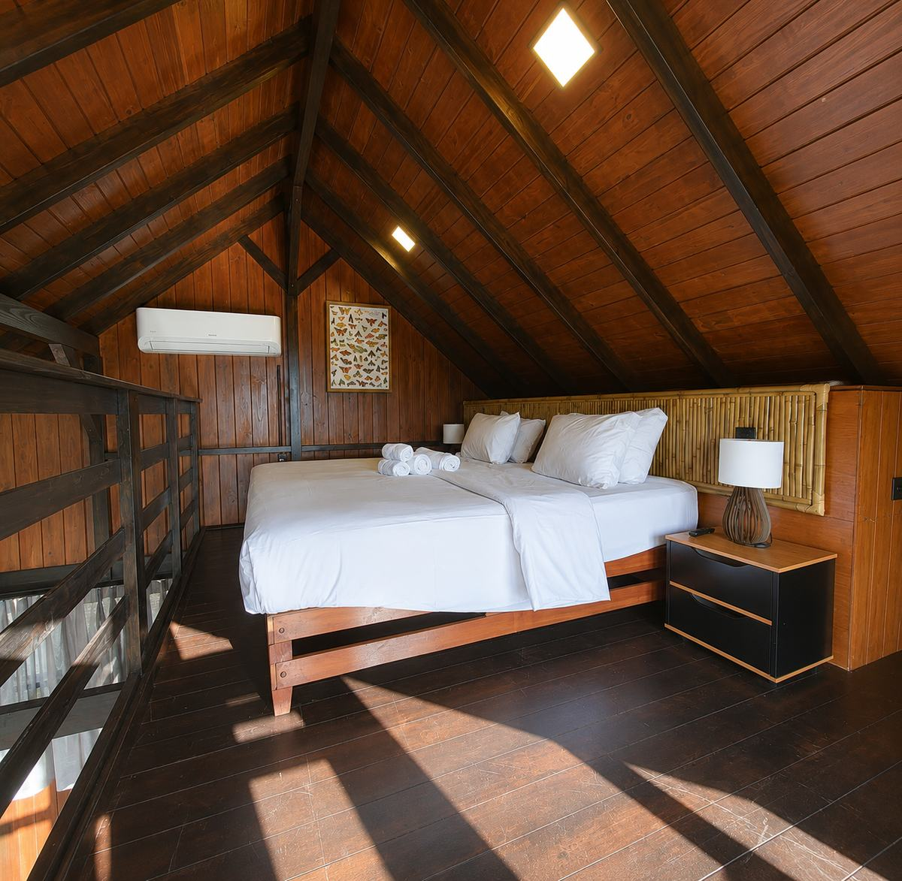
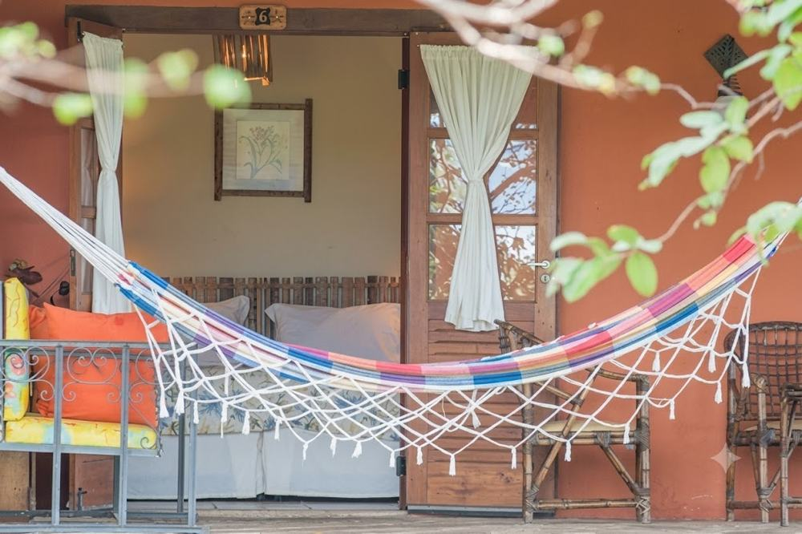

Seu fim de semana na Chapada começa dentro do Parque.
Para quem quer sair da rotina, respirar natureza e acordar cercado pelo cerrado.
Na Pousada do Parque, você fica dentro do Parque Nacional da Chapada dos Guimarães, com trilhas, torre de observação, sítio arqueológico, piscina, sauna e café da manhã incluído.
Consultar disponibilidade no WhatsApp →Informe as datas do seu fim de semana e fale diretamente com a recepção.
Um fim de semana de natureza, tranquilidade e experiências dentro do Parque Nacional, a uma viagem de Cuiabá e Várzea Grande.
Por que passar o fim de semana aqui?
Quem busca pousada na Chapada dos Guimarães encontra muita opção. Poucas ficam dentro do próprio Parque Nacional.

Dentro do Parque Nacional
A Pousada do Parque fica dentro dos limites do Parque Nacional da Chapada dos Guimarães, em meio a 500 hectares de área preservada.

Natureza a poucos passos
Trilhas, fauna do cerrado e mais de 390 espécies de aves catalogadas, tudo a caminhada da sua acomodação.

Uma estadia para desacelerar
Café da manhã incluído, piscina, sauna e redário dentro da própria pousada, para quem quer sair da rotina sem pressa.
Um fim de semana inteiro sem precisar sair do Parque

Chegada, acomodação e descanso. O fim de semana começa assim que você entra no Parque.

Dia livre para trilhas, torre de observação e visitação ao sítio arqueológico, tudo dentro da área da pousada.

Café da manhã sem pressa e as últimas horas de natureza antes de voltar para Cuiabá ou Várzea Grande.
Escolha onde você quer acordar na Chapada
Apartamentos duplos, triplos e quádruplos, além de uma cabana. Café da manhã incluído em todos.

Apartamento Duplo
Para casais ou duplas, com cama de casal e decoração acolhedora.
- Café da manhã incluído
- Acesso a todas as áreas comuns

Apartamento Triplo
Conforto para até três pessoas, com varanda e rede.
- Varanda com rede
- Café da manhã incluído

Apartamento Quádruplo
Ideal para famílias ou grupos de até quatro pessoas.
- Camas de solteiro e casal
- Café da manhã incluído

Cabana
Acomodação diferenciada, em estrutura de madeira com mezanino.
- Estrutura em madeira
- Vista para o cerrado
Experiências dentro do Parque
Tudo a caminhada de distância da sua acomodação.
Torre de Observação
Vista panorâmica do cerrado e um dos melhores pontos da região para observação de aves.
Trilhas Ecológicas
Trilhas guiadas ou autoguiadas em meio à mata nativa do Parque Nacional.

Sítio Arqueológico
Visitação autoguiada a pinturas rupestres dentro da própria área da pousada.

Observação de Aves
Mais de 390 espécies catalogadas no Parque Nacional, destino reconhecido internacionalmente por birdwatchers.
Piscina e Sauna
Espaços de descanso dentro da própria pousada, incluídos na hospedagem.

Redário
Rede na varanda para descansar entre uma trilha e outra, olhando para o cerrado.
Quer passar o próximo fim de semana na Chapada?
Consulte as datas disponíveis diretamente com a nossa recepção.
Falar com a Pousada pelo WhatsApp →Resposta direta da recepção. Consulte datas, acomodações e condições da estadia.